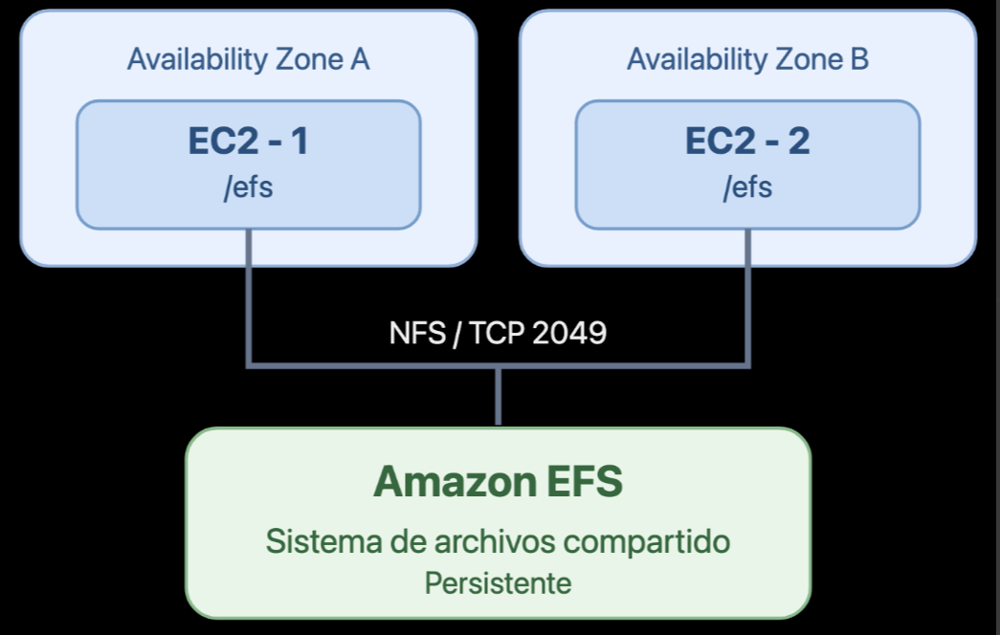

Clases + Talleres Terraform + AWS Academy (Módulos 1–4)
Computación Grid y Cloud
Cuaderno interactivo de estudio actualizado al 26 de noviembre de 2026. Incluye teoría de clase, comandos prácticos de laboratorio, talleres de Terraform, diagramas ampliables y modo de autoevaluación.
La computación en la nube permite acceder a recursos tecnológicos alojados en infraestructura remota.
Tres conceptos principales:
aprovisionamiento de recursos/servicios tecnológicos bajo un esquema bajo demanda
a través de una red (internet)
bajo un esquema pago por uso
Modelos de Servicio en la Nube:
IaaS: infraestructura como servicio: permite aprovisionar recursos tecnológicos, por ejemplo, un servidor virtual
PaaS: Plataforma como servicio, me otorga una plataforma de alguna solución tecnológica, por ejemplo me brinda herramientas como base de datos, API etc etc
SaaS: Software como servicio, por ejemplo el gmail, outlook, utilizado por usuarios finales
Modelos de Implementación.
Nube Pública: se despliega y yo puedo acceder a través de internet desde cualquier región geográfica
Nube Privada: (soberanía de los datos: hay políticas que los datos no salgan del país) se despliega y yo puedo acceder a través de INTRANET pero solo dentro de una región geográfica y de una empresa, un ejemplo AWS outposts
Nube Híbrida: mezcla de pública y privada dependiendo de los intereses del cliente
Nube Comunitaria: servidores, almacenamiento, aplicaciones y servicios— que son gestionados de manera conjunta por un grupo de usuarios con intereses alineados.
Ventajas:
CAPEX (Gasto de Capital - Capital Expenditure):
Inversión en la adquisición o mejora de activos de largo plazo para expandir el negocio.
Se registra en el balance general y su costo se deprecia o amortizar gradualmente en varios años.
OPEX (Gasto Operativo - Operational Expenditure):
Costos continuos y recurrentes del día a día necesarios para mantener la operación en marcha.
Se deduce por completo en el estado de resultados dentro del mismo período fiscal en que ocurre.
1. Cambiar gastos de capital por gastos variables
2. Economías de escala
3. Obtener recursos bajo demanda
Obtener recursos bajo demanda
4. Aumentar la velocidad y la agilidad
5. Reducir la operación y el mantenimiento de centros de datos
6. Adquirir escala mundial en minutos
Complemento — Curso AWS Academy (Módulos 1 y 3)
(Apuntes del curso oficial de AWS Academy que complementan los fundamentos de computación en la nube).
1. ¿Qué es un Servicio Web? (Módulo 1)
Es cualquier software disponible a través de Internet que se comunica mediante un formato estandarizado (como XML o JSON) para enviar solicitudes y recibir respuestas a través de una API (Interfaz de Programación de Aplicaciones).
2. Marco de Adopción de la Nube de AWS — AWS CAF (Módulo 1)
El AWS Cloud Adoption Framework (CAF) organiza la transición a la nube en 6 perspectivas divididas en dos bloques:
Bloque
Perspectiva
Enfoque principal
Capacidades empresariales
Negocio
Alinear la tecnología con las necesidades y objetivos del negocio.
Personas (Gente)
Formación técnica, cultura organizacional y dotación de personal.
Gobernanza
Controlar riesgos, costos y cumplimiento de objetivos empresariales.
Capacidades técnicas
Plataforma
Diseñar, entender y comunicar la arquitectura de los sistemas en la nube.
Seguridad
Cumplir los objetivos de confidencialidad, integridad y protección de datos.
Operaciones
Definir cómo se ejecuta, monitorea y mantiene el negocio día a día.
3. Infraestructura Global de AWS (Módulo 3)
(Complementa la ventaja 6: «Adquirir escala mundial en minutos»).
Región de AWS: Área geográfica física e independiente del mundo (ej. us-east-1).
Cada región contiene varias Zonas de Disponibilidad.
Se comunican entre sí mediante una red troncal privada de fibra óptica de AWS.
Importante: La replicación de datos entre regiones no es automática; la controla y configura el cliente según sus necesidades.
Zona de Disponibilidad (AZ — Availability Zone): Partición completamente aislada de la infraestructura dentro de una Región.
Está formada por uno o más centros de datos discretos interconectados con enlaces privados de alta velocidad y baja latencia.
Están diseñadas para aislar fallos: si una zona falla, las demás siguen operando.
Recomendación: Desplegar recursos y replicar datos en al menos dos Zonas de Disponibilidad para lograr alta resiliencia.
Centros de datos de AWS: Instalaciones físicas seguras donde se almacenan y procesan los datos. Cuentan con energía, refrigeración, redes y conectividad redundantes.
Ubicaciones de borde (Edge Locations) y Amazon CloudFront:
Amazon CloudFront: Red de entrega de contenido (CDN) que distribuye archivos, videos o páginas a usuarios finales con baja latencia.
Ubicaciones de borde: Cientos de puntos distribuidos en ciudades de todo el mundo (incluso en países donde no existe una Región de AWS) para guardar copias en caché cerca del usuario.
Cachés de borde regionales: Almacenan contenido de acceso menos frecuente para no tener que ir hasta el servidor de origen.
4. Características clave de la infraestructura en la nube (Módulo 3)
Elasticidad: Capacidad de aumentar o reducir automáticamente los recursos de forma dinámica según la demanda en tiempo real.
Escalabilidad: Capacidad de un sistema para admitir el crecimiento planificado sin perder rendimiento (agregando más servidores o potenciando los existentes).
Tolerancia a fallos (errores): Capacidad de seguir funcionando sin interrupción aunque falle uno de sus componentes internos, gracias a la redundancia integrada.
Alta disponibilidad: Garantía de que el sistema permanezca operativo y accesible (cerca del 24/7) con un tiempo de inactividad mínimo ante cualquier circunstancia.
2. Servicios de AWS y Amazon EC2
Clase: 15/10/2026
Categorías:
Categoría Informática
Un ejemplo
EC2 (Amazon Elastic Compute Cloud): Servicio de computación en la nube que permite crear y administrar servidores virtuales (llamados instancias) bajo demanda con capacidad de cómputo escalable.
Nombre completo: Amazon Elastic Compute Cloud.
Función principal: Permite aprovisionar máquinas virtuales en minutos con la configuración que elijas de CPU, memoria RAM, almacenamiento y sistema operativo (Linux, Windows, etc.).
Elasticidad: Puedes aumentar o reducir la potencia y cantidad de servidores según el tráfico o la demanda de tu aplicación.
Modelo de cobro: Pago por uso (por segundo o por hora), convirtiendo los costos de infraestructura física (CAPEX) en gastos operativos variables (OPEX).
Los AMIs (Amazon Machine Image): son imágenes de máquina virtual preconfiguradas que incluyen el sistema operativo y el software necesario para lanzar instancias en la nube. Sirven como plantillas reutilizables para desplegar servidores idénticos de forma rápida y consistente.
Instancias: Son entornos virtuales o físicos donde se ejecutan las cargas de trabajo, definidos por la conformación de la familia (tipo de hardware) y el tamaño (capacidad de recursos).
La conformación determina cuántos recursos (CPU, memoria) se asignan según la familia y el tamaño elegido.
Familia: Define el tipo de procesador y la cantidad de memoria que tendrá la instancia, agrupando configuraciones según el caso de uso (cómputo, memoria, propósito general).
Cada familia ofrece perfiles específicos de CPU y RAM para optimizar rendimiento y costo.
Pares de claves: Son el mecanismo de autenticación basado en criptografía asimétrica, donde se crean una llave pública y una privada para acceder a las instancias.
La llave pública se instala en la instancia y la privada la guarda el usuario para autenticarse de forma segura sin contraseña.
GP e IO — aclaración: En el apartado de almacenamiento, gp2/gp3 e io1/io2 son tipos de volúmenes EBS, no familias de instancias EC2.
Los volúmenes de propósito general sirven para cargas variadas; los de IOPS aprovisionadas se orientan a cargas que requieren rendimiento de entrada/salida consistente.
Complemento — Curso AWS Academy (Módulo 2)
(Apuntes del curso oficial de AWS Academy que complementan el cobro y reserva de instancias EC2).
1. Cómo se cobra Amazon EC2 (Informática)
Por tiempo de ejecución: Se factura por hora o por segundo (según el sistema operativo), únicamente mientras la instancia está en estado activo (running).
Por tipo de instancia: El precio varía según la familia, cantidad de vCPU, memoria RAM y región seleccionada.
2. Modalidades de pago de Instancias Reservadas (1 o 3 años)
Al comprometerse a usar EC2 por 1 o 3 años, AWS ofrece importantes descuentos frente al pago bajo demanda (On-Demand). A mayor pago inicial, mayor es el descuento:
Sigla
Nombre completo
Cómo funciona
Nivel de descuento
AURI
All Upfront Reserved Instance (Pago inicial completo)
Se paga el 100 % de la reserva al inicio del contrato.
Se paga una parte por adelantado y el resto en cuotas mensuales.
Descuento intermedio
NURI
No Upfront Reserved Instance (Sin pago inicial)
$0 de pago inicial; todo se divide en cuotas mensuales durante el plazo.
Descuento menor (pero superior a bajo demanda)
Nota sobre el Panel de Amazon EC2: El panel de EC2 solo muestra el estado operativo actual de tus instancias, volúmenes y límites en esa región. No sirve para consultar historiales de facturación (para eso se utiliza AWS Cost Explorer).
3. Redes y seguridad: VPC y Security Groups
Clase: 20/10/2026
VPC ID: Es el identificador único que AWS asigna a una Virtual Private Cloud, es decir, una red lógica aislada dentro de la nube donde despliegas tus recursos (servidores, bases de datos, etc.). Sirve para referenciar esa red específica en configuraciones, APIs y otros servicios.
Security Groups:
Son firewalls virtuales que controlan el tráfico de entrada y salida (se configuran) de tus instancias (como EC2), permitiendo solo los puertos, protocolos y orígenes que definen. Son stateful: si permites una conexión de entrada, la respuesta sale automáticamente sin regla adicional.
Regla de entrada (Inbound): Define qué tráfico externo puede llegar a tu instancia, indicando protocolo, puerto y origen; por ejemplo, SSH (TCP puerto 22) permite conectarte de forma remota a un servidor Linux, idealmente restringido a tu IP.
Regla de salida (Outbound): Define qué tráfico puede salir de tu instancia hacia otros destinos (internet, otras redes o servicios); por defecto en AWS permite todo el tráfico saliente. La regla de salida que se crea por defecto es la de internet
Ampliación de clase — 2026-11-12 y 2026-11-26
Última actualización: 2026-11-26
Stateful vs. Stateless (con memoria vs. sin memoria)
(Nota ortográfica: se escribe stateful, con una sola l.)
La diferencia entre ambos mecanismos es si el firewall recuerda las conexiones activas (mantiene una tabla de estado) o si evalúa cada paquete por separado:
Característica
Stateful (Con estado)
Stateless (Sin estado)
Servicio en AWS
Security Group (a nivel de instancia / interfaz de red).
Network ACL (NACL) (a nivel de subred).
¿Tiene memoria?
Sí. Registra las conexiones permitidas.
No. Evalúa cada paquete como si fuera nuevo.
Tráfico de respuesta
Automático: si entra una petición permitida, la respuesta puede salir aunque no exista regla de salida para ella.
Manual: debes permitir explícitamente la entrada y también la salida de retorno (puertos efímeros 1024–65535).
Tipo de reglas
Solo reglas de permitir (Allow); todo lo demás se bloquea por defecto.
Reglas numeradas de permitir (Allow) y denegar (Deny).
Analogía rápida
Un guardia con registro: si te dejó entrar, te deja salir automáticamente.
Un peaje sin memoria: revisa permiso al entrar y vuelve a revisarlo al salir.
Ejemplo real del Taller 12: El Security Group del EFS (mi-sg-efs-14) solo define una regla de entrada (TCP 2049 desde las EC2) y ninguna regla de salida. Aun así el EFS responde a las instancias porque el Security Group es stateful.
¿Qué significa 0.0.0.0/0 y 0.0.0.0?
Conviene distinguir la notación CIDR usada en AWS/Terraform (0.0.0.0/0) de la dirección sin máscara (0.0.0.0):
0.0.0.0/0 (Notación CIDR — «cualquier dirección IPv4»): El prefijo /0 indica que 0 bits están fijos, por lo que abarca todo el rango IPv4 (0.0.0.0 a 255.255.255.255). En la práctica se traduce como «todo Internet / cualquier origen o destino».
En entrada (ingress): acepta tráfico desde cualquier IPv4 (normal para puertos web públicos 80/443; evitarlo en producción para SSH 22 o NFS 2049).
En salida (egress): permite que la instancia salga hacia cualquier IPv4 (por ejemplo, descargar paquetes o actualizaciones).
Matiz clave: Abrir 0.0.0.0/0 en un Security Group no crea acceso a Internet por sí solo si la instancia está en una subred privada sin Internet Gateway ni IP pública; simplemente no filtra ninguna IPv4.
Comparación útil: Una única IP exacta usa /32 (ej. 203.0.113.10/32 para solo tu equipo); el equivalente de 0.0.0.0/0 en IPv6 es ::/0.
0.0.0.0 (sin /0, en servidores o aplicaciones): Cuando un servidor web o proceso escucha (bind) en 0.0.0.0:80, significa que acepta conexiones en todas las interfaces de red de esa máquina (a diferencia de 127.0.0.1, que solo responde en local).
Permitir NFS desde otro Security Group
En el grupo del destino de montaje EFS, permite entrada TCP 2049 usando como origen el ID del Security Group de las EC2 (nunca 0.0.0.0/0). En las EC2, permite la salida correspondiente. Referenciar otro Security Group evita listar IPs una por una y otorga acceso automático si agregas más instancias con ese mismo grupo.
Complemento — Curso AWS Academy (Módulo 4: Seguridad de red y datos)
(Apuntes del curso oficial de AWS Academy que complementan la seguridad de red y protección de aplicaciones. Para identidad, permisos IAM y gobernanza, consulta el tema 11. Seguridad, IAM y Gobernanza en AWS).
1. Ubicación de VPC y Security Groups en el Modelo de Responsabilidad Compartida
Responsabilidad del cliente (Seguridad «EN» la nube): Configurar correctamente los Security Groups, las reglas de firewall, las tablas de ruteo de la VPC, el sistema operativo y el cifrado de los datos.
Responsabilidad de AWS (Seguridad «DE» la nube): Proteger el cableado físico, los switches, routers físicos y los centros de datos donde corre la red virtual.
2. Cifrado de datos en tránsito: TLS, HTTP y HTTPS
(Resolución de la nota de investigación del Módulo 4 sobre datos que viajan por la red).
Datos en tránsito: Son todos los datos que se están moviendo activamente a través de una red (por ejemplo, entre el navegador de un cliente y tu instancia EC2, o entre una EC2 y Amazon EFS).
TLS (Transport Layer Security): Es el protocolo estándar abierto (sucesor de SSL) que cifra la comunicación en red extremo a extremo para que nadie pueda interceptar ni alterar la información en el camino. (En el taller 09 lo usamos al montar EFS con -o tls).
HTTP vs. HTTPS:
HTTP (Hypertext Transfer Protocol — Puerto TCP 80): Envía la información en texto plano sin cifrar; cualquiera que intercepte la red puede leer contraseñas o datos.
HTTPS (HTTP Secure — Puerto TCP 443): Es exactamente HTTP pero protegido por una capa de TLS. Cifra todo el tráfico entre el usuario y el servidor y verifica la identidad del sitio mediante certificados digitales.
3. AWS Shield (Protección de red contra ataques DDoS)
¿Qué es? Servicio administrado de protección contra ataques de Denegación de Servicio Distribuido (DDoS)(corregido de «DDoD» en el apunte original).
Cómo funciona: Monitorea el tráfico de red de forma permanente y aplica mitigaciones automáticas e inmediatas para evitar que tráfico malicioso sature tus servidores, minimizando la latencia y el tiempo de inactividad.
Niveles:AWS Shield Standard (gratuito y activo por defecto en todas las cuentas) y AWS Shield Advanced (protección avanzada de pago).
4. Automatización inicial con User Data
Clase: 22/10/2026
User Data: permite pasar un script o configuración a una instancia (en AWS EC2), que se ejecuta solo en el primer arranque.
Las “instrucciones” son comandos automáticos (bash o cloud-config) como instalar paquetes, crear usuarios o levantar servicios, para que la instancia se configure sola.
cloud-init.log (/var/log/cloud-init.log): Registro detallado de los eventos internos de cloud-init, el servicio que ejecuta la configuración inicial de la instancia; sirve para diagnosticar qué etapas se ejecutaron y cuáles fallaron.
cloud-init-output.log (/var/log/cloud-init-output.log): Captura la salida estándar y los errores de los comandos de tu script de User Data; es el primero que se revisa para depurar fallos del script.
5. Consola, AWS CLI y SDK
Clase: 27/10/2026
Mecanismos de acceso e interacción con AWS (o Herramientas de gestión e interfaces de AWS)
AWS Web (Consola de administración): Interfaz gráfica accesible desde cualquier navegador para configurar y supervisar tus recursos visualmente. Es ideal para tareas exploratorias, monitoreo en tiempo real y administraciones manuales sin tocar la terminal.
AWS CLI por consola: Herramienta que permite interactuar con los servicios de AWS ejecutando comandos directos en la terminal. Permite automatizar despliegues por medio de scripts y ejecutar operaciones repetitivas con rapidez.
--image-id: Sistema operativo que usará el servidor (ID de la AMI).
--instance-type: Capacidad de hardware (CPU y RAM, ej. t3.micro).
--key-name: Nombre de tu clave SSH registrada en AWS (sin extensión .pem).
--count: Número de servidores que se van a crear.
SDK (Software Development Kit): Conjunto de librerías para lenguajes específicos (Python, Node.js, Java) que integra AWS dentro de tus programas. Facilita que tus aplicaciones se conecten, envíen datos o controlen la infraestructura desde su propio código.
Complemento — Curso AWS Academy (Módulos 1 y 4)
(Apuntes del curso oficial de AWS Academy que complementan los mecanismos de acceso e interacción).
Tipos de credenciales y acceso para un usuario IAM (Módulo 4)
Cuando se crea un usuario en AWS IAM, se le pueden habilitar dos formas de acceso independientes, cada una con sus propias credenciales:
Tipo de acceso
Herramientas que habilita
Credenciales requeridas
Acceso a la Consola de Administración
Navegador web (interfaz gráfica de AWS).
1. ID de cuenta (12 dígitos) o alias. 2. Nombre de usuario IAM. 3. Contraseña IAM. 4. (Recomendado) Código MFA (autenticación multifactor).
Acceso mediante programación
AWS CLI, AWS SDK y llamadas directas a la API (en formato XML/JSON).
1. ID de clave de acceso (Access Key ID). 2. Clave de acceso secreta (Secret Access Key). (Nota: en tus apuntes figuraba como «clave remota», su nombre oficial es Secret Access Key).
6. Infraestructura como código con Terraform
Clase: 05/11/2026
Última actualización: 2026-11-26
Terraform es una herramienta de código abierto de Infraestructura como Código (IaC) creada por HashiCorp. Permite definir, crear, actualizar y eliminar (CRUD) recursos en la nube mediante archivos de configuración (extensión .tf, normalmente con main.tf como archivo principal) de manera declarativa: defines tus intenciones (el estado deseado), no el paso a paso manual.
1. ¿Cómo funciona internamente?
En lugar de entrar a la consola web de AWS y hacer clic para crear servidores o firewalls, escribes archivos .tf en lenguaje HCL (HashiCorp Configuration Language). Terraform se comunica con las APIs de AWS mediante un plugin llamado Provider y registra todo lo que crea en un archivo de estado.
Archivos especiales que genera Terraform
Archivo / Carpeta
¿Para qué sirve?
¿Se sube a Git?
main.tf
Archivo principal con los recursos (resource) y el proveedor (provider).
Sí
variables.tf
Declara las variables de entrada (variable) para parametrizar el proyecto sin escribir valores fijos. (Convención oficial en plural; Terraform lee cualquier *.tf, por eso variable.tf también funciona).
Sí
outputs.tf
Declara las salidas (output) que se muestran en consola al desplegar y se exponen para otros módulos o scripts.
Sí
terraform.tfvars(opcional)
Asigna valores concretos a las variables definidas en variables.tf (por ejemplo, distintos valores para desarrollo vs. producción).
Depende (no si tiene secretos)
.terraform/
Carpeta oculta donde terraform init descarga el plugin del proveedor (ej. hashicorp/aws).
No
.terraform.lock.hcl
Archivo candado que fija la versión exacta del proveedor para despliegues reproducibles.
Sí (recomendado)
terraform.tfstate
Archivo de estado. Mapea tu código con los recursos reales en AWS (IDs, IPs, etc.). Permite saber qué actualizar o destruir.
No (puede contener datos sensibles)
terraform.tfstate.backup
Respaldo automático del estado inmediatamente anterior al último cambio.
No
Regla clave de organización: Terraform lee todos los archivos .tf de la carpeta como un solo bloque lógico. Separar en main.tf, variables.tf y outputs.tf no cambia la ejecución, pero mantiene el código limpio, reutilizable y fácil de mantener.
2. Anatomía del código HCL (Bloques fundamentales)
2.1 Bloque provider (Proveedor)
Define con qué nube o plataforma se conecta Terraform y en qué región operará.
provider "aws" {
region = "us-east-1"
}
"aws": nombre del proveedor oficial de Amazon Web Services.
region: región geográfica de despliegue (us-east-1 = Norte de Virginia).
2.2 Bloque resource (Recurso)
Es el bloque principal. Cada resource declara un objeto real de infraestructura en AWS (una instancia EC2, un Security Group, una regla de red, etc.).
Tipo de recurso (<TIPO_DE_RECURSO>): Definido por el proveedor AWS (no se puede inventar). Indica qué servicio de AWS se creará (aws_instance, aws_security_group, etc.).
Nombre local (<NOMBRE_LOCAL>): Lo eliges libremente. Solo existe dentro de Terraform para referenciar el recurso desde otros bloques (ej. mi_instancia, mi-sg).
Nombre en AWS (name o tags.Name): Es el argumento interno que define cómo aparecerá el recurso en la consola web de AWS.
Tipos de resource usados en los talleres de clase
Tipo de recurso
Servicio AWS
¿Para qué sirve?
aws_security_group
EC2 / VPC
Crea un firewall virtual que agrupa reglas de tráfico entrante y saliente.
aws_vpc_security_group_ingress_rule
EC2 / VPC
Crea una regla de entrada desacoplada y la vincula a un Security Group (práctica recomendada por AWS).
aws_vpc_security_group_egress_rule
EC2 / VPC
Crea una regla de salida desacoplada y la vincula a un Security Group.
aws_instance
EC2
Aprovisiona una máquina virtual (instancia EC2) con AMI, tamaño, llave SSH y red.
2.3 Archivo variables.tf y bloque variable (Variables de entrada)
El archivo variables.tf centraliza los parámetros configurables del proyecto para evitar valores fijos (hardcoded) en main.tf y reutilizar la misma infraestructura cambiando solo datos (región, AMI, tipo de instancia, llave SSH o cantidad).
variable "cantidad_instancias" {
description = "Cantidad de instancias"
type = number
default = 2
}
Campo
Obligatorio
¿Para qué sirve?
"nombre"
Sí
Identificador de la variable. Se lee en el código como var.<nombre> (ej. var.cantidad_instancias).
description
No (recomendado)
Documenta qué valor representa la variable.
type
No (recomendado)
Restringe el tipo de dato: string, number, bool, list(...), map(...), etc.
default
No
Valor por defecto. Si se omite, Terraform lo pedirá por terminal al ejecutar plan o apply.
¿Cómo recibe sus valores una variable? (de menor a mayor prioridad):
Valor default dentro de variables.tf.
Variables de entorno (TF_VAR_<nombre>).
Archivo terraform.tfvars (se carga automáticamente si existe).
Bandera en terminal: terraform apply -var="cantidad_instancias=3".
2.4 Archivo outputs.tf y bloque output (Salidas)
El archivo outputs.tf define qué valores generados por AWS quieres imprimir en consola al terminar terraform apply (o volver a consultar con terraform output), sin tener que buscarlos en la consola web. Además, permite exponer esos datos para que otros módulos de Terraform o scripts externos los consuman.
output "ip_publica_instancias" {
description = "Direcciones IP públicas de las instancias creadas"
value = aws_instance.mi_instancia-efs[*].public_ip
}
Campo
Obligatorio
¿Para qué sirve?
"nombre"
Sí
Nombre con el que se imprimirá la salida en terminal.
description
No
Explica qué información devuelve la salida.
value
Sí
Atributo o expresión de los recursos que se quiere mostrar.
sensitive
No
Si es true, oculta el valor en la consola (útil para contraseñas o tokens).
2.5 Expresiones y conceptos clave en HCL
Referencias y dependencias implícitas: Al escribir vpc_security_group_ids = [aws_security_group.mi-sg.id], Terraform detecta automáticamente que primero debe crear el Security Group y luego la instancia EC2, sin definir el orden a mano.
Meta-argumento count e interpolación ${...}: Con count = var.cantidad_instancias, Terraform crea N copias del recurso usando un índice count.index que inicia en 0. Al escribir "Mi instancia EFS - ${count.index + 1}", genera nombres numerados (1, 2, ...).
Expresión Splat ([*]): Cuando un recurso usa count, se convierte en una lista. La sintaxis aws_instance.mi_instancia-efs[*].public_ip recorre todas las instancias y extrae una lista con el atributo public_ip de cada una.
Funciones nativas (length()):length(aws_instance.mi_instancia-efs) devuelve cuántos elementos fueron creados en esa lista de instancias.
2.6 Dependencia lineal vs. Dependencia cíclica (Error: Cycle)
Internamente, Terraform construye un grafo de dependencias (DAG) para saber en qué orden crear y destruir recursos.
Dependencia lineal (normal): El recurso B necesita un dato de A, pero A no necesita nada de B (A -> B).
Ejemplo:aws_instance usa aws_security_group.mi-sg.id. Terraform crea primero el Security Group y luego la instancia EC2.
Dependencia cíclica (error): Dos o más recursos se necesitan mutuamente para poder crearse (A <-> B). Terraform no puede decidir cuál va primero y aborta con Error: Cycle.
¿Dónde ocurre en nuestro contexto (Taller 12: EC2 + EFS)?
Ocurre cuando dos Security Groups se referencian entre sí mediante reglas inline (dentro de cada bloque aws_security_group):
SG_Instancias define un egress hacia SG_EFS.id (necesita que SG_EFS exista primero).
SG_EFS define un ingress desde SG_Instancias.id (necesita que SG_Instancias exista primero).
Solución (aplicada en el Taller 12): Crear primero ambos Security Groups vacíos (sin reglas inline) y después agregar las reglas como recursos separados (aws_vpc_security_group_ingress_rule y aws_vpc_security_group_egress_rule). Así ambos IDs ya existen cuando se crean las reglas y el ciclo desaparece.
Corrección importante sobre EC2 y Security Groups: Crear una instancia EC2 que referencia un Security Group NO es una dependencia cíclica, sino una dependencia lineal (SG -> EC2): no hace falta crear la instancia sin SG y asociarlo después, porque el SG no depende de la instancia. La estrategia de «crear primero los recursos base vacíos y vincularlos después» aplica precisamente al caso de dos Security Groups que se referencian mutuamente (o si una regla del SG intentara leer la IP privada de la propia instancia que usa ese SG).
3. Guía de comandos en terminal (Ciclo de vida)
Todos los comandos de Terraform se ejecutan dentro de la carpeta del proyecto que contiene los archivos .tf.
Configurar credenciales de AWS
aws configure
Guarda AWS Access Key ID, AWS Secret Access Key, región (us-east-1) y formato (json). En AWS Academy / Learner Lab recuerda incluir también el aws_session_token en ~/.aws/credentials.
Inicializar el proyecto (primera vez o al agregar proveedores)
terraform init
Descarga el plugin del proveedor AWS en .terraform/ y crea .terraform.lock.hcl.
Formatear y validar sintaxis (sin tocar AWS)
terraform fmt
terraform validate
fmt indenta y ordena el código automáticamente; validate verifica que la sintaxis HCL y las referencias sean válidas.
Previsualizar el plan de ejecución
terraform plan
Compara tus .tf contra terraform.tfstate y AWS. Símbolos del plan:
+ (create): se creará un recurso nuevo.
~ (update in-place): se modificará sin destruirlo.
- (destroy): se eliminará.
-/+ (replace): se destruirá y recreará (ej. al cambiar la AMI de una EC2).
Aplicar los cambios en AWS
terraform apply
Muestra el plan, pide confirmación (yes), crea los recursos en AWS, actualiza terraform.tfstate e imprime los outputs. (Con -auto-approve omite la confirmación manual).
Inspeccionar el despliegue actual
terraform output
terraform state list
terraform show
output vuelve a mostrar las salidas (como IPs públicas); state list enumera los recursos gestionados; show muestra todos los atributos guardados en el estado.
Destruir la infraestructura al terminar el laboratorio
terraform destroy
Elimina todos los recursos registrados en el estado respetando el orden inverso de dependencias. Es fundamental ejecutarlo al terminar cada práctica para evitar costos o consumo de créditos.
Persistente: Es un almacenamiento que perdura en el tiempo
Storage EC2:
Amazon EBS (Elastic Block Store), servicio de almacenamiento persistente por bloques independientes que trabajan en conjunto
gp3 o gp2 (propósito general; gp3 corresponde a la tercera generación): se usa para cualquier cosa, para ámbitos generales
io1 e io2 (input-output de primera o segunda generación): tipos de volúmenes de alto rendimiento por ejemplo para instalar recursos como base de datos ejemplo un CRUD, optimizada para la escritura y lectura
Amazon EFS (Elastic File System), servicio administrado, permite varias instancias almacenen de manera compartida sobre este sistema de almacenamiento de red a través del protocolo NFS.
NFS (Network File System o Sistema de Archivos de Red) es un protocolo distribuido de nivel de aplicación basado en la arquitectura cliente-servidor, que permite a un equipo acceder, leer y escribir archivos y directorios remotos a través de una red IP como si estuvieran almacenados en su propio disco local.

Network es un punto de acceso a cada una de las zonas de disponibilidad
No Persistente: (Efímero) es volátil mientras el proceso está en ejecución existe y si se termina también se termina o borra ese almacenamiento
Recuerda tenemos que montar un disco cuando colocamos un nuevo disco en el servidor
Ampliación de clase — 2026-11-12
Última actualización: 2026-11-17
EBS frente a EFS
Aspecto
EBS
EFS
Tipo
Almacenamiento en bloques.
Sistema de archivos compartido.
Uso en el taller
Volumen de 10 GiB de la instancia 1, montado en /disco2.
Mismo sistema de archivos montado en /efs1 de las dos instancias.
Preparación
Identificar el volumen; formatear solo si está vacío y sin sistema de archivos.
Instalar amazon-efs-utils y montar por red con TLS.
Acceso
Volumen dedicado en este ejercicio; Multi-Attach es una opción específica de io1/io2.
Varios clientes acceden a los mismos archivos mediante NFS.
NFS y archivos compartidos
NFS permite montar un sistema de archivos remoto como un directorio local. Para EFS, la conectividad NFS utiliza TCP 2049. Leer desde la segunda instancia el archivo escrito en la primera verifica acceso al mismo almacenamiento, no una copia sincronizada entre discos.
Elasticidad y disponibilidad
EFS administra la infraestructura y ajusta el almacenamiento a los archivos guardados. La facturación puede incluir otros componentes además de capacidad. EFS Regional guarda datos en varias zonas de disponibilidad; EFS One Zone usa una sola. No todos los sistemas EFS tienen la misma distribución entre zonas.
(Apuntes del curso oficial de AWS Academy que complementan los conceptos de almacenamiento).
1. ¿Qué es un Bucket de Amazon S3? (Resolución de consulta — Módulo 4)
(En el Módulo 4 surgió la duda: «¿qué es eso de bucket de S3?» al estudiar políticas basadas en recursos).
Amazon S3 (Simple Storage Service): Es el servicio de almacenamiento de objetos de AWS (a diferencia de EBS que guarda bloques y EFS que guarda archivos en red NFS). Sirve para guardar cualquier tipo de archivo (imágenes, copias de seguridad, logs, videos) desde cualquier lugar por Internet.
Bucket («cubeta» o contenedor): Es la carpeta raíz o contenedor principal donde guardas tus archivos (objetos) dentro de Amazon S3.
Cada bucket tiene un nombre único a nivel mundial (ej. mis-apuntes-cloud-2026).
Por defecto es totalmente privado, pero permite adjuntarle directamente una política basada en recursos (Bucket Policy) para definir quién puede leer o subir archivos en él.
2. Cifrado de datos en reposo (Módulo 4)
Datos en reposo: Son los datos almacenados físicamente en un medio persistente (como un volumen EBS, un sistema EFS o un bucket de S3).
Cómo se protegen: El cifrado codifica los datos con una clave secreta (administrada mediante AWS KMS) para que sean ilegibles en disco; solo quien posea permisos sobre esa clave puede descifrarlos y leerlos.
3. Modelo de cobro del almacenamiento (Módulo 2)
En AWS el almacenamiento se factura principalmente por GB almacenado al mes (según el tipo de disco o clase de almacenamiento), más posibles cargos por solicitudes o transferencia de datos hacia fuera de la región.
8. Práctica: conexión SSH y montaje de EBS
Clase: 10/11/2026
Antes de formatear, identifica el dispositivo correcto con lsblk -f. El comando mkfs elimina datos del volumen seleccionado. Los nombres de dispositivo pueden variar entre instancias.
Para qué sirve: Inicia una sesión remota segura por SSH hacia la instancia utilizando tu archivo de llave privada (.pem).
2. Inspección de discos disponibles
Listar dispositivos de bloque y tamaños
lsblk
Para qué sirve: Muestra los discos y particiones conectados al servidor con su tamaño (20G en xvda y 10G en xvdb), tipo y punto de montaje.
Verificar sistemas de archivos y UUID
lsblk -f
Para qué sirve: Lista los dispositivos junto con su tipo de sistema de archivos (FSTYPE), identificador UUID y espacio disponible. Permite comprobar que el disco nuevo (xvdb) está vacío y sin formato.
Consultar metadatos del nuevo disco
sudo blkid /dev/sdb
Para qué sirve: Consulta el UUID y formato del disco /dev/sdb. Al estar recién creado, no devuelve información.
3. Formateo y montaje del nuevo volumen
Crear el directorio de montaje
sudo mkdir -p /disco2
Para qué sirve: Crea la carpeta /disco2 con permisos de administrador, la cual funcionará como punto de montaje para acceder al disco.
Formatear el volumen con sistema de archivos XFS
sudo mkfs -t xfs /dev/sdb
Para qué sirve: Formatea el disco /dev/sdb asignándole el sistema de archivos XFS(sin este paso previo, mount arroja error de superbloque/formato inválido).
Montar el disco en el sistema
sudo mount /dev/sdb /disco2
Para qué sirve: Vincula el disco ya formateado dentro de /disco2 para que el sistema operativo pueda leer y escribir en él.
4. Verificación y prueba de escritura
Comprobar espacio disponible y tipo de formato
df -hT
Para qué sirve: Muestra el espacio libre y usado de todos los discos en formato legible (GB/MB) junto con su sistema de archivos (xfs), confirmando que /disco2 está activo (reemplaza a df y corrige el error de escritura df -ht).
Crear un archivo de prueba en el volumen
echo "texto de prueba" | sudo tee /disco2/prueba.txt
Para qué sirve: Crea el archivo prueba.txt dentro del nuevo disco con permisos de administrador y escribe una línea de texto para validar la escritura.
Leer el archivo creado
cat /disco2/prueba.txt
Para qué sirve: Muestra en pantalla el contenido de prueba.txt para confirmar que los datos se guardaron correctamente.
Verificación final de montaje y formato
lsblk -f
Para qué sirve: Comprueba que xvdb ya cuenta con formato xfs, un UUID propio asignado y punto de montaje activo en /disco2.
9. Taller de almacenamiento EBS y EFS
Fecha de clase: 2026-11-12
Última actualización: 2026-11-17
1. Objetivo
Aprovisionar y configurar almacenamiento en bloque dedicado (Amazon EBS) y almacenamiento de archivos en red compartido (Amazon EFS) sobre instancias Amazon Linux 2023, aplicando reglas de seguridad mediante Security Groups y validando el acceso a los mismos archivos desde dos servidores EC2.
2. Conceptos Clave
Amazon EBS (Elastic Block Store): Almacenamiento en bloques. En este taller se utiliza un volumen dedicado a la primera instancia. Solo se formatea si es nuevo y no contiene un sistema de archivos; existen configuraciones Multi-Attach para determinados volúmenes io1/io2.
Amazon EFS (Elastic File System): Sistema de archivos en red administrado basado en el protocolo NFSv4 (puerto TCP 2049). Permite que múltiples instancias EC2 lean y escriban los mismos archivos al mismo tiempo y crece automáticamente.
Security Group (Stateful): Firewall virtual con memoria (si permite entrar tráfico, deja salir la respuesta). Por seguridad, el EFS no se abre al mundo (0.0.0.0/0), sino únicamente al Security Group de las instancias EC2.
3. Fase 1: Configuración en la Consola Web de AWS
A. Configurar los Security Groups (VPC / EC2)
Security Group para las instancias EC2 (sg-ec2):
Regla de entrada: Puerto 22 (SSH) desde tu IP pública actual (/32) para conectarte por terminal.
Security Group para el EFS (sge-efs-ae):
Regla de entrada: Tipo NFS (Puerto TCP 2049) poniendo como Origen el ID del Security Group de tus EC2 (sg-ec2).
B. Lanzar las dos instancias EC2 (Amazon Linux 2023)
Instancia 1 (Principal):
Seleccionar Amazon Linux 2023, tipo t3.micro y tu par de claves (.pem).
En Configuración de red, elegir la VPC por defecto y asignar sg-ec2.
En Configurar almacenamiento, mantener el disco raíz (8 GiB) y hacer clic en Agregar nuevo volumen para añadir un disco EBS de 10 GiB.
Instancia 2 (Secundaria):
Lanzar una segunda instancia Amazon Linux 2023 en la misma VPC, con el mismo Security Group (sg-ec2) y la misma llave .pem.
C. Crear el Sistema de Archivos EFS
Ir al servicio Amazon EFS en la consola de AWS y hacer clic en Crear sistema de archivos.
Asignar un nombre, seleccionar la misma VPC de las instancias EC2 y hacer clic en Personalizar.
En el paso de Acceso a la red, reemplazar el Security Group por defecto de cada Zona de Disponibilidad por el grupo sge-efs-ae (puerto 2049 abierto).
Finalizar la creación y copiar el ID del sistema de archivos (ejemplo: fs-02d737f8f33137fd6).
Requisitos de red: verifica que existan destinos de montaje EFS disponibles en las zonas usadas por las instancias, que DNS funcione y que las reglas de salida de EC2 permitan TCP 2049 hacia EFS.
4. Fase 2: Formatear y Montar el Disco EBS (10 GB) en Instancia 1
Conéctate por SSH a la Instancia 1 y ejecuta los siguientes comandos:
Identificar el nombre del disco nuevo de 10 GB:
lsblk
lsblk -f
Nota: En instancias t3, los volúmenes se presentan como dispositivos NVMe. /dev/nvme1n1 es solo el nombre del ejemplo: confirma el dispositivo y su tamaño con lsblk y el sistema de archivos con lsblk -f antes de continuar.
Crear la carpeta que servirá como punto de montaje:
sudo mkdir -p /disco2
Formatear únicamente el volumen nuevo y vacío con XFS:
mkfs puede destruir los datos existentes. No lo ejecutes sobre el disco raíz ni sobre un volumen que ya contenga datos. Sustituye el dispositivo del ejemplo por el que hayas identificado.
sudo mkfs -t xfs /dev/nvme1n1
Importante: Un volumen nuevo sin sistema de archivos necesita formateo para este uso. Uno restaurado desde una instantánea puede estar ya formateado: no lo vuelvas a formatear.
Montar el disco en la carpeta /disco2:
sudo mount /dev/nvme1n1 /disco2
Comprobar el montaje y realizar prueba de escritura:
df -hT
echo "texto de prueba" | sudo tee /disco2/prueba.txt
cat /disco2/prueba.txt
5. Fase 3: Instalar y Montar Amazon EFS en Instancia 1
En la misma terminal SSH de la Instancia 1:
Instalar la librería oficial de utilidades EFS y crear la carpeta /efs1:
Listar y leer el archivo creado desde la Instancia 1:
ls -la /efs1
cat /efs1/prueba.txt
Escribir desde la Instancia 2 para validar lectura y escritura compartidas:
echo "Hola desde la segunda instancia" | sudo tee -a /efs1/prueba.txt
cat /efs1/prueba.txt
Al ejecutar cat /efs1/prueba.txt nuevamente en la Instancia 1, deben verse ambas líneas tras completar la escritura. Se accede al mismo sistema de archivos; no se sincronizan dos discos locales.
7. Resumen de Comandos Útiles de Verificación
Comando
Función
lsblk -f
Lista discos conectados, formato (xfs), UUID y puntos de montaje.
df -hT
Muestra el espacio usado/disponible en GB/MB y el tipo de sistema (xfs, nfs4).
ls -la /efs1
Lista todos los archivos (incluidos ocultos) y permisos dentro del EFS.
cat /efs1/prueba.txt
Muestra en pantalla el contenido del archivo de texto.
8. Alcance del taller
Los comandos realizan montajes manuales. Para volver a montar automáticamente después de un reinicio se requiere una configuración adicional, como /etc/fstab. Un montaje manual no implica que los datos almacenados se borren al reiniciar.
La filosofía principal de AWS es pagar solo por lo que se utiliza, sin contratos obligatorios a largo plazo. Los tres impulsores de costo principales son:
Informática (Cómputo):
Se cobra por hora o por segundo de ejecución.
El precio varía según el tipo y familia de instancia (vCPU y RAM).
Almacenamiento:
Se cobra normalmente por GB almacenado al mes.
Transferencia de datos:
Datos de entrada (desde Internet hacia AWS): Generalmente gratuitos.
Datos de salida (desde AWS hacia Internet o hacia otra Región):Se cobran por GB (de forma agregada).
Entre servicios dentro de la misma Zona de Disponibilidad (con IP privada): Suele ser gratuito o de bajo costo si cruza zonas.
2. Filosofía de precios y Economías de Escala
(Resolución de la nota de investigación: «¿Cómo funciona "pagar menos si usa más" y cómo se relaciona con Economías de escala?»).
Paga menos cuando usas más (Descuentos por volumen): En servicios de almacenamiento (como Amazon S3) o transferencia de datos, AWS aplica precios escalonados por niveles (tiers). Cuantos más GB consumas al mes, más barato te cuesta cada GB adicional.
Paga menos cuando reservas: Si comprometes capacidad por 1 o 3 años (AURI, PURI, NURI en EC2 o RDS), obtienes hasta un 72 % de descuento frente al pago bajo demanda.
Relación con las Economías de Escala (Paga aún menos a medida que AWS crece): Como AWS agrupa el consumo de millones de clientes en todo el mundo, compra hardware, energía y ancho de banda a costos unitarios mucho más bajos que cualquier empresa individual. AWS traslada ese ahorro reduciendo periódicamente los precios de sus servicios para todos los clientes.
3. Costo Total de Propiedad (TCO) y Calculadora de Precios
Costo Total de Propiedad (TCO — Total Cost of Ownership): Es una estimación financiera que identifica tanto los costos directos (servidores, licencias) como los costos indirectos (electricidad, refrigeración, espacio físico, personal de mantenimiento) de mantener un sistema local frente a llevarlo a la nube.
Para qué es útil: Para comparar una infraestructura on-premises contra AWS, presupuestar cargas de trabajo y construir un caso de negocio para la gerencia.
Calculadora de precios de AWS (AWS Pricing Calculator): Herramienta web gratuita que permite crear estimaciones detalladas del costo mensual de arquitecturas y casos prácticos antes de desplegarlos en AWS.
4. Servicios sin costo adicional vs. recursos que sí cobran
En AWS existen servicios de gestión, seguridad, red y aprovisionamiento cuyo uso es gratuito por sí mismo, pero sí pagas por los recursos subyacentes que estos crean o utilizan:
Servicios gratuitos (sin costo adicional)
Qué sí genera cobro al usarlos
Amazon VPC (Red virtual privada)
Componentes opcionales como NAT Gateway o VPN.
AWS IAM (Identidades y accesos)
Totalmente gratuito.
Facturación consolidada (Consolidated Billing en AWS Organizations)
El consumo real de cada cuenta miembro.
AWS Auto Scaling, AWS CloudFormation, AWS Elastic Beanstalk, AWS OpsWorks
Las instancias Amazon EC2, volúmenes Amazon EBS, balanceadores o bases de datos Amazon RDS que estas herramientas aprovisionen automáticamente.
5. Herramientas de monitoreo de costos vs. estado operativo
Es importante no confundir qué herramienta sirve para ver facturas y cuál para operaciones o auditoría:
Herramienta
Función principal
¿Muestra historial financiero de facturación?
AWS Cost Explorer (Explorador de costos)
Visualizar, analizar y proyectar los costos y el consumo de AWS a lo largo del tiempo mediante gráficos y filtros.
Sí (es la herramienta oficial de análisis de costos).
Panel de Amazon EC2
Muestra el estado operativo actual de las instancias, volúmenes y límites de la región.
No.
AWS Trusted Advisor
Inspecciona tu cuenta y da recomendaciones automáticas en 5 categorías: optimización de costos, seguridad, tolerancia a fallos, rendimiento y límites/cuotas de servicio.
No (da consejos de ahorro, no historial de facturas).
AWS CloudTrail (en S3)
Registra quién hizo qué llamada a la API y cuándo para auditoría de seguridad.
No.
6. Planes de Soporte de AWS (AWS Support)
AWS ofrece 4 planes oficiales de soporte, ordenados de menor a mayor cobertura:
Plan
Para quién está pensado
Cobertura y canales
AWS Trusted Advisor
Tiempo de respuesta crítico y TAM
1. Basic
Todas las cuentas (incluido gratis por defecto).
Atención 24/7 solo para facturación y cuenta; foros y documentación. (Sin soporte técnico).
Solo comprobaciones básicas.
Sin SLA técnico. No incluye TAM.
2. Developer
Entornos de prueba y desarrollo.
Soporte técnico por correo electrónico en horario laboral.
Solo comprobaciones básicas.
< 24 h (sistema afectado) / < 12 h (sistema deteriorado). No incluye TAM.
3. Business
Entornos de producción.
Soporte técnico 24/7 por teléfono, chat y correo.
Acceso completo a todas las comprobaciones.
< 1 hora si un sistema de producción cae. No incluye TAM.
4. Enterprise
Cargas de trabajo de misión crítica para la empresa.
Soporte 24/7 completo + Conserjería de facturación.
Acceso completo a todas las comprobaciones.
< 15 minutos ante caída crítica. Incluye un TAM (Technical Account Manager — Administrador Técnico de Cuentas dedicado).
11. Seguridad, IAM y Gobernanza en AWS (Curso AWS — Módulos 2 y 4)
La seguridad y el cumplimiento se dividen entre AWS y el cliente:
Responsable
Lema oficial
Qué administra y protege
El Cliente
Seguridad «EN» la nube (Dentro de la nube)
- Datos del cliente y su cifrado (en reposo y en tránsito). - Aplicaciones, gestión de usuarios y permisos (IAM). - Configuración del Sistema Operativo, parches y actualizaciones (ej. en EC2). - Configuración de red y firewalls (Security Groups, Network ACLs).
AWS
Seguridad «DE» la nube (De la infraestructura base)
- Hardware físico: servidores, discos, cables y mantenimiento físico. - Infraestructura global: Regiones, Zonas de Disponibilidad, Centros de datos y Ubicaciones de borde. - Capa de software de virtualización subyacente (Cómputo, Almacenamiento, Bases de datos y Redes físicas).
2. AWS Identity and Access Management (IAM)
Definición: Servicio gratuito que permite administrar de forma segura el acceso a los servicios y recursos de AWS.
Recurso: Cualquier objeto o entidad dentro de una cuenta con el que se puede trabajar (ej. una instancia EC2, un bucket de S3 o un volumen EBS).
¿Qué controla IAM?
Quién puede acceder (Autenticación).
A qué recursos puede acceder y qué acciones puede realizar (Autorización).
Cómo puede obtener acceso (Consola web o Programación CLI/SDK).
A. Componentes principales de IAM
Usuario de IAM (Persona o aplicación): Identidad permanente que representa a una persona o servicio que interactúa con AWS.
Por defecto, un usuario recién creado no tiene ningún permiso.
Puede autenticarse por Consola (cuenta + usuario + contraseña + MFA) o por Programación (Access Key ID + Secret Access Key para CLI/SDK).
Grupo de IAM: Colección de usuarios de IAM que necesitan los mismos permisos (ej. grupo Desarrolladores o Administradores).
Un usuario puede pertenecer a varios grupos (o a ninguno).
No existe un grupo predeterminado.
Los grupos no pueden estar anidados (un grupo solo contiene usuarios, nunca otros grupos ni roles).
Rol de IAM: Identidad con permisos específicos que no pertenece a una sola persona ni tiene contraseñas o claves permanentes.
Está diseñado para que lo asuma temporalmente un usuario, una aplicación o un servicio de AWS (por ejemplo, una instancia EC2 que necesita permiso para guardar archivos en S3).
Entrega credenciales temporales de seguridad.
Política de IAM: Documento escrito en formato JSON que define explícitamente qué acciones están permitidas (Allow) o denegadas (Deny) sobre qué recursos.
B. Aclaración de tus consultas sobre Políticas, Entidades y Permisos
(Resolución de las dudas anotadas en el Módulo 4).
1. ¿Qué es una «Entidad» en IAM? Son los objetos de identidad de IAM a los que puedes adjuntar una política de permisos: un Usuario de IAM, un Grupo de IAM o un Rol de IAM.
2. Tipos de Políticas en IAM:
Políticas basadas en identidad: Se adjuntan a un Usuario, Grupo o Rol. Indican qué puede hacer esa identidad (ej. «Este grupo puede reiniciar instancias EC2»). Una misma política se puede asociar a varias entidades, y una entidad puede tener varias políticas.
Políticas basadas en recursos: Se adjuntan directamente al recurso (el ejemplo más común es una Bucket Policy en un bucket de Amazon S3). Indican a quién le permite el recurso entrar (ej. «Este bucket S3 permite que la cuenta X lea sus archivos»).
3. Evaluación de permisos: Denegación implícita vs. Autorización vs. Denegación explícita:
Denegación implícita (por defecto): Todo está denegado al principio si no hay ninguna política que lo autorice.
Autorización explícita (Allow): Una política concede permiso para hacer la acción. Si no hay ningún Deny, la acción se permite.
Denegación explícita (Deny): Una política prohíbe expresamente la acción. La denegación explícita SIEMPRE gana sobre cualquier permiso Allow.
Práctica recomendada: Aplicar siempre el Principio de mínimo privilegio (otorgar únicamente los permisos estrictamente necesarios para realizar una tarea).
C. Corrección de tu flujo jerárquico y Diagrama de IAM
Análisis de la nota que escribiste en tus apuntes: Escribiste: «1. Crear política -> 2. Asociar política a un rol -> 3. Crear grupo y ese grupo asociarlo al rol -> 4. Crear usuario y asignarlo al grupo».
¿Qué estaba bien y qué debemos corregir?
Lo correcto: Siempre se empieza definiendo la Política JSON (qué permisos damos) y luego los Usuarios se meten dentro de Grupos.
La corrección clave: En AWS un Grupo NO se asocia directamente a un Rol. Las Políticas se adjuntan directamente al Grupo (para personas fijas) O se adjuntan a un Rol (para servicios como EC2 o accesos temporales).
Ruta 1 (Para personas / equipos): Creas la Política → Creas el Grupo y le adjuntas la Política → Creas el Usuario y lo metes al Grupo.
Ruta 2 (Para servidores / aplicaciones o permisos temporales): Creas la Política → Creas el Rol y le adjuntas la Política → El servicio (ej. una instancia EC2) o un usuario asume el Rol y recibe credenciales temporales.
Diagrama de flujo exacto: Cómo interactúan todos los componentes de IAM en AWS
D. Usuario Raíz (Root User) y MFA
Usuario Raíz (Root User): Se crea automáticamente al abrir la cuenta de AWS (con el correo y contraseña iniciales) y tiene acceso total e ilimitado.
Prácticas recomendadas obligatorias para el Usuario Raíz:
NO usarlo para las tareas cotidianas.
Eliminar las claves de acceso programáticas (Access Key ID y Secret Access Key) del usuario raíz para evitar accesos ilimitados por código.
Activar MFA (Autenticación Multifactor): Exige un segundo factor (código temporal desde una app o llave física) además de la contraseña.
Crear un usuario administrador en IAM para trabajar en el día a día.
Tareas exclusivas del Usuario Raíz: Cambiar o cancelar el plan de soporte de AWS, modificar los datos principales de la cuenta (correo raíz, nombre), cerrar la cuenta de AWS o restaurar permisos perdidos de un administrador de IAM.
(Nota sobre tus apuntes: bajo el título de AWS KMS tenías anotados «tipos de acceso de usuario» y «prácticas recomendadas para proteger su cuenta»; esos dos puntos pertenecen a AWS IAM, por lo que quedaron integrados aquí).
3. AWS Organizations y Políticas de Control de Servicios (SCP)
(Integrado desde el Módulo 2 por su relación directa con la gobernanza y seguridad de cuentas).
¿Qué es AWS Organizations? Servicio que permite consolidar múltiples cuentas de AWS de una empresa y administrarlas de forma centralizada.
Beneficios principales:
Facturación consolidada (Consolidated Billing) y descuentos por volumen combinados.
Agrupar cuentas en Unidades Organizativas (OU) y aplicarles políticas de seguridad centralizadas.
Automatizar la creación de nuevas cuentas mediante llamadas a la API.
Los 4 pasos para configurar AWS Organizations (Resolución de nota «Investigar»)
Paso 1 — Crear la organización: Desde la cuenta principal (administradora) e invitar o crear las cuentas miembro de la empresa.
Paso 2 — Crear las Unidades Organizativas (OU): Agrupar las cuentas por departamento o entorno (ej. OU-Producción, OU-Desarrollo, OU-Finanzas).
Paso 3 — Crear las Políticas de Control de Servicios (SCP): Redactar los documentos de límites de permisos en formato JSON.
Paso 4 — Adjuntar y probar las SCP: Asignar las políticas a la raíz, a una OU o a una cuenta específica y verificar las restricciones.
Políticas de Control de Servicios (SCP — Service Control Policies)
Son políticas de AWS Organizations (con sintaxis JSON similar a IAM) que establecen el límite máximo de permisos (guardrails) para las cuentas o Unidades Organizativas (OU).
Regla de oro: Una SCP NO concede permisos por sí sola. Solo define qué servicios o acciones están permitidos como tope en una cuenta; el usuario dentro de esa cuenta aún necesita que IAM le otorgue el permiso. (Si una SCP bloquea EC2 en una cuenta, ni siquiera el usuario Raíz o Administrador de esa cuenta podrá lanzar una EC2).
4. Servicios de Cifrado, Autenticación, Auditoría y Conformidad
Servicio / Concepto
Función clave en AWS (Módulo 4)
AWS KMS (Key Management Service)
Crea y administra claves criptográficas para el cifrado de datos en reposo en tus servicios y aplicaciones. Utiliza módulos de seguridad de hardware (HSM) validados bajo el estándar FIPS 140-2 y registra el uso de las claves en CloudTrail.
Amazon Cognito
Servicio para agregar inicio de sesión, registro y control de acceso de usuarios finales a tus aplicaciones web y móviles. Escala a millones de usuarios y soporta proveedores sociales (Google, Facebook, Amazon) y empresariales (SAML, Microsoft Active Directory).
AWS Shield
Protección administrada contra ataques DDoS (Denegación de Servicio Distribuido) con detección continua y mitigación automática para evitar caídas y latencia.
AWS CloudTrail(Resolución de consulta)
«La cámara de seguridad de las API»: Registra y audita todas las llamadas a la API y acciones realizadas en la cuenta (quién hizo qué, desde qué IP y a qué hora), ya sea desde la consola, CLI o SDK. Sus registros se pueden guardar en Amazon S3.
AWS Config
Evalúa, audita y monitorea el historial de configuración de tus recursos de AWS a lo largo del tiempo. Compara las configuraciones actuales contra las reglas deseadas para verificar el cumplimiento normativo.
AWS Artifact
Portal autoservicio bajo demanda que da acceso a los informes de seguridad, auditoría y conformidad de AWS (certificaciones ISO, reportes SOC, informes PCI-DSS del sector de tarjetas de pago).
Programas de Conformidad de AWS
Colaboración de AWS con auditores independientes. Se clasifican en: 1. Certificaciones y acreditaciones (evaluadas por un tercero independiente). 2. Leyes, regulaciones y privacidad (obligaciones legales por país o industria). 3. Alineaciones y marcos de trabajo (guías de buenas prácticas publicadas por organismos).
12. Talleres prácticos de Terraform (EC2 y EFS)
Última actualización: 2026-11-26
Análisis práctico del repositorio de código Aryy234/cloud-u1-ps-ae, mostrando la evolución real entre taller8-ae2 (despliegue básico en un solo archivo) y taller12-efs-ae (arquitectura modular con variables, outputs, count y reglas de red entre Security Groups para Amazon EFS).
1. Taller 8 (taller8-ae2): EC2 y Security Group básico
Archivo:taller8-ae2/main.tfObjetivo: Primer despliegue en AWS con Terraform creando 1 instancia EC2 y 1 Security Group con reglas embebidas (inline) y valores fijos.
A. Recurso aws_security_group — Nombre local: mi-sg
Campo
Valor en el proyecto
¿Para qué sirve?
name
"mi-security-group-terraform"
Nombre visible del Security Group en la consola de AWS.
Permite tráfico saliente únicamente por el puerto 80 TCP.
Observación técnica (egress en Taller 8): Al permitir salida solo por el puerto 80, la instancia no podría resolver DNS (puerto 53) ni descargar paquetes por HTTPS (puerto 443). En Terraform, a diferencia de la consola de AWS, no se crea automáticamente la regla de "toda salida" cuando defines egress manualmente. Esto se corrige en el Taller 12.
B. Recurso aws_instance — Nombre local: mi_instancia
Campo
Valor en el proyecto
¿Para qué sirve?
ami
"ami-0c230065b91270bc6"
Imagen del sistema operativo (AMI) que usará el servidor.
instance_type
"t2.micro"
Capacidad de hardware virtual (vCPU y RAM).
key_name
"mi-primera-llaves-ae"
Nombre del par de llaves SSH registrado en AWS para iniciar sesión.
tags
{ Name = "MiInstanciaTerraForm2" }
Etiqueta que asigna el nombre visible de la instancia en EC2.
vpc_security_group_ids
[aws_security_group.mi-sg.id]
Vincula el Security Group mediante una referencia dinámica (dependencia implícita).
2. Taller 12 (taller12-efs-ae): Múltiples EC2 y red para Amazon EFS
Archivos:taller12-efs-ae/main.tf, variable.tf y outputs.tfObjetivo: Aplicar buenas prácticas separando archivos, parametrizando con variables, desplegando 2 instancias con count, devolviendo outputs y configurando dos Security Groups comunicados por el puerto NFS 2049.
Alcance actual del código:taller12-efs-ae crea los Security Groups (para EC2 y para EFS) y las 2 instancias EC2, pero todavía no declara el recurso de almacenamiento EFS (aws_efs_file_system ni aws_efs_mount_target). Si el EFS se crea aparte en consola AWS, se asocia al Security Group mi-security-group-terraform-efs generado aquí.
A. Archivo variable.tf (Parámetros de entrada)
Variable
Tipo (type)
Valor por defecto (default)
Uso en main.tf
region
string
"us-east-1"
provider "aws" (region)
ami_id
string
"ami-0c230065b91270bc6"
aws_instance (ami)
tipo_instancia
string
"t2.micro"
aws_instance (instance_type)
nombre_llave
string
"mi-primera-llaves-ae"
aws_instance (key_name)
cantidad_instancias
number
2
aws_instance (count)
B. Archivo main.tf (Security Groups, Reglas e Instancias)
1. Security Groups base (sin reglas inline)
aws_security_group.mi-sg-efs-instancias-14 (name = "mi-security-group-terraform-efs-instancias"): protege las instancias EC2 dentro de vpc-09ffffa328714b7dd.
aws_security_group.mi-sg-efs-14 (name = "mi-security-group-terraform-efs"): protege los Mount Targets de EFS en la misma VPC.
Asociada al SG de instancias. Abre tcp puerto 22 desde cidr_ipv4 = "0.0.0.0/0" para acceso SSH.
salida_efs
egress_rule
Asociada al SG de instancias. Permite salida tcp puerto 2049 (NFS) cuyo destino es referenced_security_group_id = aws_security_group.mi-sg-efs-14.id.
salida_internet
egress_rule
Asociada al SG de instancias. Permite salida libre a Internet (ip_protocol = "-1", todos los protocolos y puertos, hacia 0.0.0.0/0) para instalar amazon-efs-utils y actualizaciones.
entrada_efs
ingress_rule
Asociada al SG de EFS. Permite entrada tcp puerto 2049únicamente desde recursos que pertenezcan al SG de instancias (referenced_security_group_id = aws_security_group.mi-sg-efs-instancias-14.id).
¿Por qué el SG de EFS no necesita reglas de salida? Porque los Security Groups de AWS son stateful: al autorizar la entrada desde las EC2 por el puerto 2049, el tráfico de respuesta queda permitido automáticamente.
¿Por qué separar las reglas en recursos independientes? Además de seguir la buena práctica de AWS, evita una dependencia cíclica (Error: Cycle): si mi-sg-efs-instancias-14 y mi-sg-efs-14 tuvieran reglas inline apuntándose mutuamente, Terraform no sabría cuál crear primero. Creándolos vacíos y añadiendo las reglas aparte se rompe el ciclo (ver Tema 6 — Dependencia cíclica).
Mover vpc_id = "vpc-09ffffa328714b7dd" a una variable (o consultar la VPC por defecto con data "aws_vpc" "default" { default = true }).
Por convención estándar de Terraform, el archivo de variables suele nombrarse en plural (variables.tf).
Seguridad SSH en producción:
En laboratorios se suele abrir SSH a 0.0.0.0/0, pero en entornos reales debe restringirse a tu IP pública (<TU_IP>/32) o usar AWS Systems Manager Session Manager.
Nota sobre salida_efs vs. salida_internet:
Como salida_internet permite ip_protocol = "-1" hacia 0.0.0.0/0, ya cubre el tráfico saliente al puerto 2049. Conservar salida_efs es útil a nivel didáctico y protege la arquitectura si luego restringes la salida a Internet.
Siguiente paso lógico en Terraform para EFS:
Declarar aws_efs_file_system y aws_efs_mount_target (asociándole aws_security_group.mi-sg-efs-14.id) para automatizar también el sistema de archivos sin pasar por la consola web.